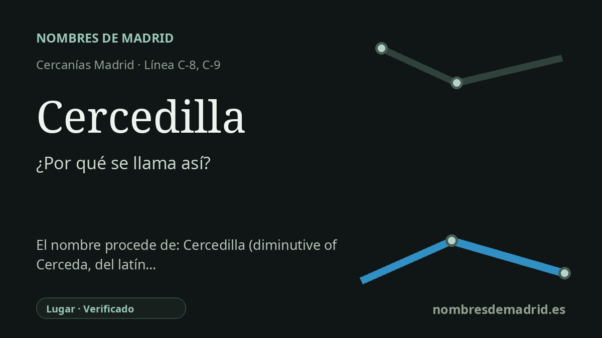

Publicado el · Investigación de Nombres de Madrid · Cómo verificamos cada origen · 8 fuentes consultadas
Respuesta rápida
La estación de Cercedilla toma su nombre del municipio serrano al que sirve. El topónimo se explica mejor como diminutivo de la cercana Cerceda, nombre relacionado en última instancia con vocabulario latino del roble y los bosques de robles.
La historia del nombre
La estación de Cercedilla toma su nombre directamente del municipio de Cercedilla, situado en la Sierra de Guadarrama, al noroeste de Madrid. Renfe identifica la estación como estación de Cercedilla y la vincula con las líneas C-8 y C-9 de Cercanías, con el ferrocarril de montaña hacia Navacerrada y Cotos arrancando desde este punto.
El origen más profundo del nombre no está en el ferrocarril, sino en el antiguo topónimo de la población. Toponomasticon Hispaniae explica Cercedilla como un diminutivo toponímico formado a partir de la cercana Cerceda, situada a unos 13 km. Dicho de forma sencilla, Cercedilla puede entenderse como una Cerceda menor o derivada, de manera comparable a pares madrileños como Villalba/Villalbilla o Valdemoro/Valdemorillo.
Cerceda pertenece a una familia más amplia de topónimos hispánicos relacionados con los bosques de robles. La cadena lingüística propuesta remite a formas vinculadas al latín quercus, 'roble', y a quercetum o formaciones colectivas semejantes con el sentido de robledal o lugar arbolado. Así, el nombre de la estación es una etiqueta ferroviaria moderna aplicada a una palabra de paisaje mucho más antigua.
Las grafías históricas muestran que el nombre ya estaba asentado en la Edad Moderna. Toponomasticon Hispaniae cita documentos con formas como Zerezedilla en 1544, Cerecedilla en los siglos XVI y XVII, y Cercedilla en registros posteriores. La misma fuente destaca la posición del lugar junto al antiguo paso de la Fuenfría, cuya importancia disminuyó cuando se acondicionó el paso por Navacerrada.
El ferrocarril añadió una segunda capa al nombre. La estación de Cercedilla fue construida entre finales del siglo XIX y principios del XX en la línea Madrid-Segovia, y en 1923 pasó a ser el punto de partida del Ferrocarril Eléctrico del Guadarrama, hoy asociado a la línea C-9. La etimología está sólidamente apoyada, pero el relato humano exacto del diminutivo, por ejemplo si gentes de Cerceda fundaron un asentamiento estacional o semipermanente, sigue siendo una reconstrucción razonada más que un hecho documentado de forma directa.